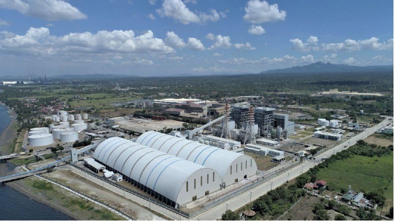

Curriculum Vitae
ENGR. RON CHRSTIAN AALA APEROCHO
Electrical Engineer/Condition Based Monitoring Engineer
EXPERIENCE
South Luzon Thermal Energy Corporation, 2x135 MW CFB Power Plant
Condition Based Monitoring (CBM) Engineer
August 2020 - Present
- Accountable for the health of the plant's rotating equipment using oil analysis and vibration analysis
- Carry out vibration reading on pumps, motors, fans, compressors, and gearboxes using VMI Viber X5.
- Provide vibration spectrum analysis using SpectraPro.
- Coordinate with turbine vibration expert regarding correction of turbine vibration related issues by using vibration data such as orbit, polar, bode plots and waterfall.
- Carry out scheduled machinery vibration data collection, lubricant sample collection and performing analysis to evaluate equipment running condition and recommend corrective measures.
- Utilize CBM procedures such as phase analysis, impact tests, one plane and two plane balancing to resolve vibration issues.
- Lead maintenance on precision alignment for critical equipment.
- Carry out ultrasonic testing on bearings and valves using UE Ultraprobe 15000.
- Coordinate with Maintenace and Operations of monitoring findings and other maintenance strategies.
Therma Marine Inc. - AboitizPower, 2 x 50 MW Diesel Engine Power Plant
Control Room Engineer
October 2019 - August 2020
- Implements start-up, shutdown and loading of all generators and its auxiliaries according to standard operating procedures.
- Monitor various operating systems and make corrective action for any deviation from standard operating limits
- Accomplishes monitoring log sheets, recording activities and abnormalities and other necessary information, including all power plant operating data on an hourly basis.
Electrical and Instrumentation Engineer
January 2019 - October 2019
- Conducts preventive maintenance activities on all generators in accordance with the PMS to ensure that generators are in good condition.
- Conducts visual inspection of electrical and machine control systems
- Ensures that the engine monitoring and protection system is in good condition by testing the Resistance Temperature Device (RTD) and calibrating instruments attached to the engines.
- Recalibration and maintenance of pressure transmitters/switches, temperature transmitters/switches, level transmitters/switches and pneumatic controllers.
- Also perform responsibilities of the Electrical Engineer
Electrical Engineer
March 2018 - January 2019
- Conducts preventive maintenance activities on all main generators and HV substation electrical equipment
- Conducts repair of LV, MV and HV breakers, switchgears, contactors to be used for spares
- Conducts corrective and reliability centered maintenance on electrical equipment such as Insulation Resistance (IR) test
- Conducts routine inspection of HV and transmission lines
APPLICATION AND TOOLS USED:
- Megger MIT1025 Insulation Tester
- VMI Viber X5 (Vibration Monitoring Tool)
- UE Ultraprobe 15000 (Ultrasonic Testing Tool)
- SpectraPro Software
- Setpoint Software (Turbine Vibration Monitoring Software)
- Easy-Laser Shaft Precision Alignment
- Maximo Software
- AutoCAD, SketchUp
TRAININGS AND CERTIFICATION:
- ISO 18436-2 Vibration Analyst Level 1 - Mobius Institute
- ISO 18436-2 Vibration Analyst Level 2 Cert. No. M-151507-01 - Mobius Institute
- Basic Occupational Safety and Health Training, Safety Officer 2 - Dept. of Labor and Employment, PH
Contact me through this channels
Hobbies and General Information
EXAMPLE WORK ENVIROMENT
